Pensjonsrapportering er en kritisk del av norsk regnskapsføring som sikrer korrekt og transparent presentasjon av bedriftens pensjonsforpliktelser og pensjonskostnader. Dette omfatter både lovpålagte krav til regnskapsføring og utvidet rapportering for interessenter.
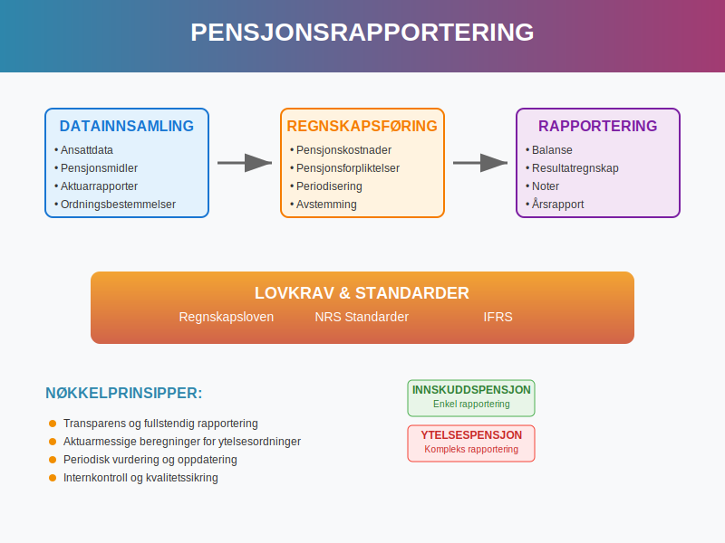
Hva er Pensjonsrapportering?
Pensjonsrapportering refererer til den systematiske prosessen med å måle, registrere og rapportere alle aspekter av bedriftens pensjonsordninger i regnskapet og tilhørende dokumentasjon. Dette inkluderer både innskuddsbaserte og ytelsesbaserte pensjonsordninger som påvirker selskapets finansielle stilling.
Formål med Pensjonsrapportering
Pensjonsrapportering har flere kritiske formål:
- Transparens: Gi interessenter fullstendig innsikt i pensjonskostnader og -forpliktelser
- Compliance: Sikre etterlevelse av regnskapsstandarder og lovkrav
- Beslutningsgrunnlag: Understøtte strategiske beslutninger om pensjonsordninger
- Risikostyring: Identifisere og kvantifisere pensjonsmessige risikoer
Lovkrav til Pensjonsrapportering
Norske bedrifter må følge strenge krav til pensjonsrapportering etablert gjennom flere regelverk:
Regnskapsloven og NRS Standarder
Regnskapsloven og tilhørende Norske Regnskapsstandarder (NRS) krever:
- Korrekt regnskapsføring av pensjonskostnader
- Fullstendig opplysning om pensjonsordninger i noter
- Aktuarmessige beregninger for ytelsesordninger
- Årlig vurdering av pensjonsmidler og -forpliktelser
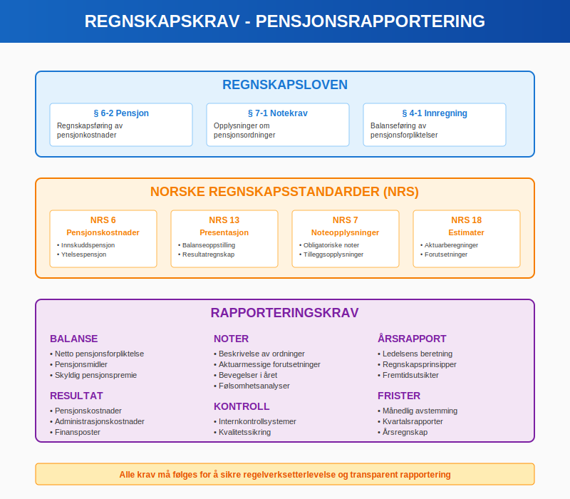
Regnskapsføringsmetoder
Pensjonsrapportering varierer betydelig basert på type pensjonsordning:
Innskuddspensjon
Innskuddspensjoner har relativt enkel rapporteringsstruktur:
| Element | Regnskapsbehandling | Rapporteringskrav |
|---|---|---|
| Løpende innskudd | Lønnskostnad når påløpt | Spesifikasjon i noter |
| Skyldige innskudd | Kortsiktig gjeld | Presentasjon i balanse |
| Administrasjonskostnader | Driftskostnad | Separat rapportering |
Ytelsespensjon
Ytelsespensjoner krever omfattende rapportering:
- Pensjonsforpliktelse: Nåverdi av fremtidige pensjonsytelser
- Pensjonsmidler: Markedsverdi av investerte midler
- Netto pensjonsforpliktelse: Differanse mellom forpliktelse og midler
- Pensjonskostnad: Periodisert kostnad i resultatregnskapet
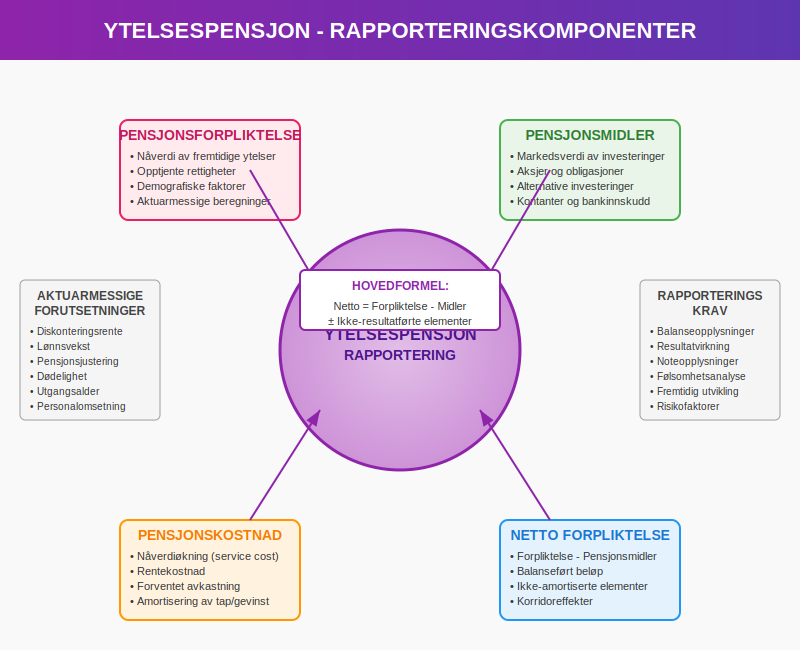
Aktuarmessige Beregninger
Aktuarberegninger danner kjernen i pensjonsrapportering for ytelsesordninger:
Sentrale Forutsetninger
Aktuarmessige beregninger baseres på flere kritiske forutsetninger:
-
Demografiske antagelser:
- Dødelighet og forventet levealder
- Utgangsalder og pensjoneringsmønster
- Personalomsetning og avgangsmønster
-
Økonomiske antagelser:
- Diskonteringsrente
- Lønnsvekst og inflasjon
- Pensjonsregulering (G-verdi utvikling)
- Forventet avkastning på pensjonsmidler
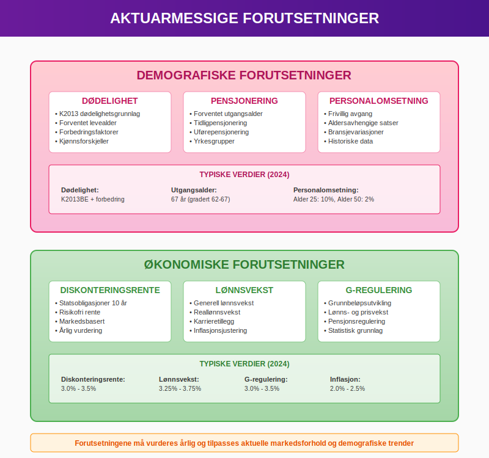
Beregningsprosess
Den aktuarmessige prosessen involverer:
- Datainnsamling: Ansattinformasjon og ordningsbestemmelser
- Forutsetningssetting: Fastsettelse av demografiske og økonomiske antagelser
- Beregning: Nåverdiberegning av fremtidige pensjonsytelser
- Rapportering: Presentasjon av resultater for regnskapsformål
Komponenter i Pensjonsrapportering
Omfattende pensjonsrapportering inkluderer flere sentrale komponenter:
Balanseopplysninger
Balansen må vise:
- Netto pensjonsforpliktelse som langsiktig gjeld
- Pensjonsmidler (hvis relevant)
- Skyldige pensjonspremier som kortsiktig gjeld
Resultatopplysninger
Resultatregnskapet skal inkludere:
- Periodiserte pensjonskostnader som lønnskostnad
- Finansposter relatert til pensjon
- Aktuarmessige gevinster/tap (når det gjelder)
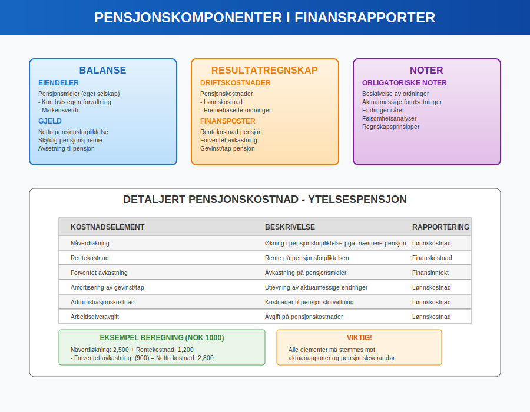
Noteopplysninger
Noter til regnskapet må inneholde omfattende pensjonsopplysninger:
Obligatoriske Noteopplysninger
- Beskrivelse av ordninger: Detaljert beskrivelse av alle pensjonsordninger
- Regnskapsprinsipper: Valgte prinsipper for pensjonsregnskapsføring
- Aktuarmessige forutsetninger: Oversikt over alle sentrale antagelser
- Bevegelser: Endringer i pensjonsforpliktelser og pensjonsmidler
- Følsomhetsanalyse: Effekter av endringer i nøkkelforutsetninger
Årsrapportens Pensjonsdel
Pensjonsrapportering i årsrapporten krever strukturert presentasjon:
Ledelsens Beretning
Ledelsens beretning bør adressere:
- Pensjonsstrategi: Overordnet strategi for pensjonsordninger
- Endringer: Vesentlige endringer i pensjonsordninger
- Fremtidsutsikter: Forventede utviklinger i pensjonskostnader
- Risikoer: Identifiserte risikoer knyttet til pensjonsforpliktelser
Detaljerte Notekrav
Pensjonsnoten må være komplett og forståelig:
Note X - Pensjoner
1. Beskrivelse av pensjonsordninger
2. Regnskapsprinsipper
3. Aktuarmessige forutsetninger
4. Pensjonsforpliktelser og pensjonsmidler
5. Bevegelser i regnskapsåret
6. Pensjonskostnader
7. Følsomhetsanalyser
8. Fremtidige premiebetalinger
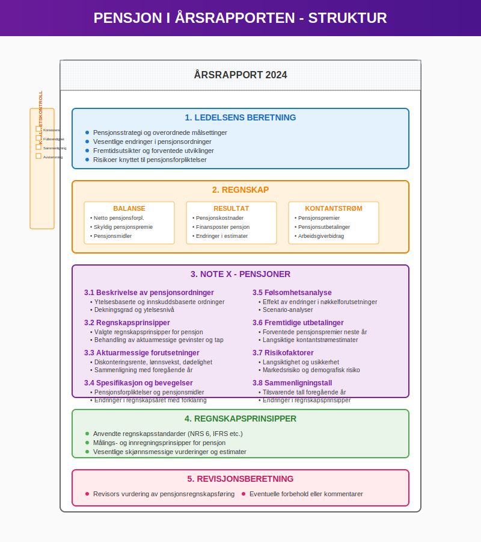
Internkontroll for Pensjonsrapportering
Effektiv pensjonsrapportering krever robust internkontroll:
Kontrollmiljø
Kontrollmiljøet for pensjon bør omfatte:
- Ansvarsfordeling: Klar fordeling av ansvar for pensjonsrapportering
- Kompetanse: Sikre tilstrekkelig fagkompetanse
- Dokumentasjon: Fullstendig dokumentasjon av prosesser og beslutninger
- Godkjenning: Klare godkjenningslinjer for pensjonsbeslutninger
Kontrollaktiviteter
Sentrale kontrollaktiviteter inkluderer:
- Månedlig avstemming: Kontroll av premiebetalinger og regnskapsføring
- Kvartalsvis gjennomgang: Vurdering av pensjonsforpliktelser
- Årlig aktuarvurdering: Gjennomgang av aktuarmessige forutsetninger
- Regelverkskontroll: Sikre etterlevelse av endrede regelverk
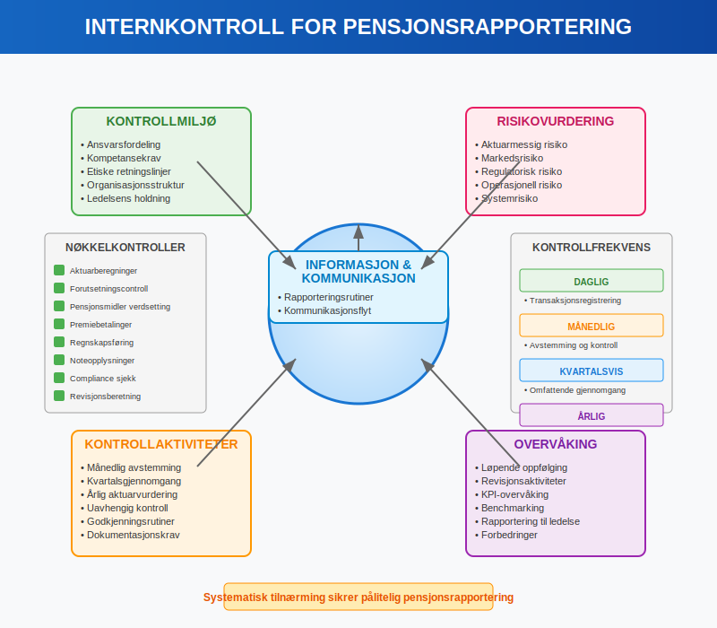
Risikostyring
Pensjonsmessige risikoer som må styres:
- Aktuarmessig risiko: Feil i forutsetninger og beregninger
- Markedsrisiko: Svingninger i pensjonsmidlers verdi
- Regulatorisk risiko: Endringer i lovkrav og standarder
- Operasjonell risiko: Feil i systemer og prosesser
Digitalisering av Pensjonsrapportering
Moderne pensjonsrapportering drar nytte av digital teknologi:
Automatiserte Systemer
Digitale pensjonssystemer muliggjør:
- Sanntidsrapportering: Løpende oppdatering av pensjonsdata
- Integrerte beregninger: Automatiserte aktuarmessige beregninger
- Compliance-overvåking: Automatisk kontroll av regelverksetterlevelse
- Scenariomodellering: Avanserte analyser av fremtidige utviklinger
API-integrasjoner
API-tilkoblinger til:
- Pensjonsselskaper for pensjonsmiddeldata
- Aktuarkonsulenter for beregningsresultater
- Regnskapssystemer for automatisk føring
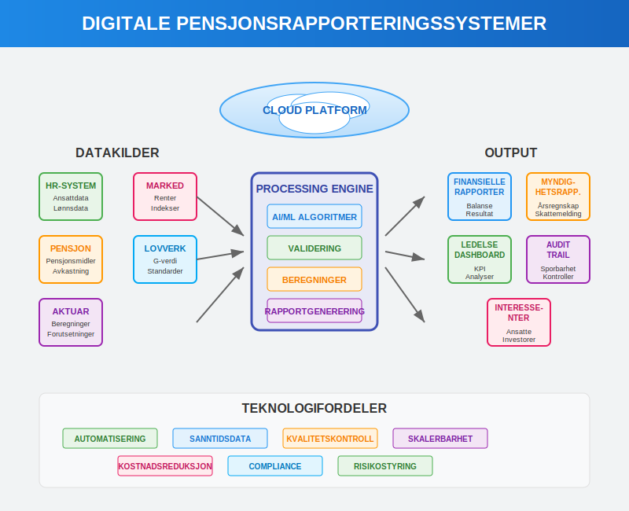
Internasjonale Standarder
For selskaper som rapporterer etter IFRS gjelder spesielle krav:
IAS 19 - Employee Benefits
IAS 19 krever:
- Detaljert aktuarmessig verdsetting av ytelsesbaserte ordninger
- Korridor-tilnærming eller direkte resultatføring av aktuarmessige gevinster/tap
- Omfattende noteopplysninger om pensjonsordninger
- Årlig aktuarvurdering av alle vesentlige ordninger
Forskjeller fra Norske Standarder
Hovedforskjeller mellom IFRS og norske regler:
| Aspekt | IFRS (IAS 19) | Norske standarder |
|---|---|---|
| Aktuarmessige gevinster/tap | Direkte i totalresultat | Korridor eller direkte |
| Ikke-opptjente rettigheter | Øyeblikkelig kostnadsføring | Amortisering |
| Diskonteringsrente | Høykvalitets selskapsobligasjoner | Statsobligasjoner |
| Notekrav | Svært detaljerte | Moderat detaljerte |
Sektorspesifikke Pensjonsutfordringer
Ulike sektorer har spesielle pensjonsrapporteringsutfordringer:
Offentlig Sektor
Offentlige virksomheter møter unike utfordringer:
- Statens Pensjonskasse (SPK): Spesielle regler for offentlig ansatte
- Kommunal sektor: Varierte pensjonsordninger på kommunalt nivå
- Helseforetak: Komplekse ordninger for helsepersonell
Privat Sektor
Private bedrifter har andre fokusområder:
- Konkurransedyktige ordninger: Balanse mellom kostnader og ansattfordeler
- Fleksibilitet: Tilpasning til virksomhetens utviklingsfaser
- Kostnadseffektivitet: Optimalisering av pensjonskostnader
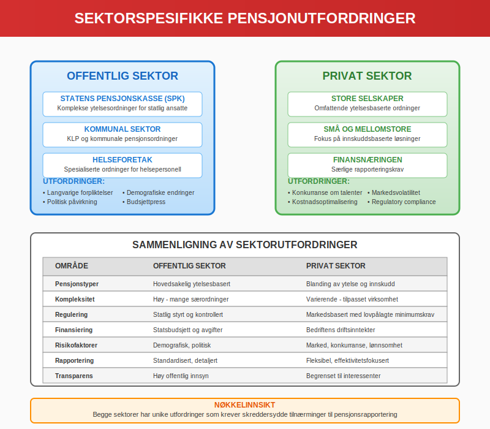
Fremtidens Pensjonsrapportering
Pensjonsrapportering vil fortsette å utvikle seg:
Teknologiske Innovasjoner
Nye teknologier vil påvirke rapportering:
- Kunstig intelligens: Automatiserte aktuarmessige beregninger og prognoser
- Blockchain: Sikker og transparent registrering av pensjonsrettigheter
- Cloud-computing: Skalerbare løsninger for små og mellomstore bedrifter
- Data analytics: Dypere innsikt i pensjonsmessige risikomønstre
Regulatoriske Endringer
Forventede regelverksendringer:
- Nye IFRS-standarder: Fortsatt utvikling av internasjonale standarder
- ESG-rapportering: Bærekraftshensyn i pensjonsforvaltning
- Digital rapportering: Standardiserte digitale rapporteringsformater
- Realtidsrapportering: Krav til raskere og mer oppdatert rapportering
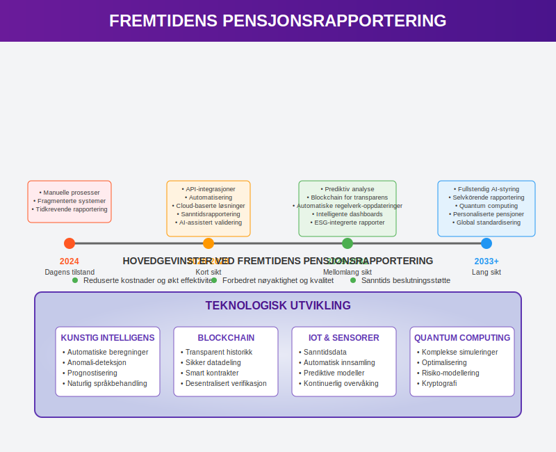
Praktiske Anbefalinger
For bedrifter som ønsker å forbedre sin pensjonsrapportering:
Organisering
Effektiv organisering krever:
- Tydelig ansvarsfordeling: Klargjøring av roller og ansvar
- Kompetanseutvikling: Sikre tilstrekkelig fagkompetanse
- Dokumenterte prosedyrer: Skriftlige rutiner for alle prosesser
- Kvalitetssikring: Systematisk kontroll og verifisering
Systemvalg
Ved valg av systemer bør man vurdere:
- Funksjonalitet: Dekker systemet alle rapporteringsbehov?
- Integrasjon: Kan systemet integreres med eksisterende løsninger?
- Skalerbarhet: Kan systemet vokse med virksomheten?
- Support: Er leverandøren dyktig på pensjonsrapportering?
Samarbeidspartnere
Viktige samarbeidspartnere:
- Autorisert regnskapsfører: Sikre korrekt regnskapsbehandling
- Aktuarkonsulent: Profesjonelle aktuarmessige beregninger
- Pensjonsselskap: Kompetent leverandør av pensjonstjenester
- Revisor: Ekstern kvalitetssikring av rapportering
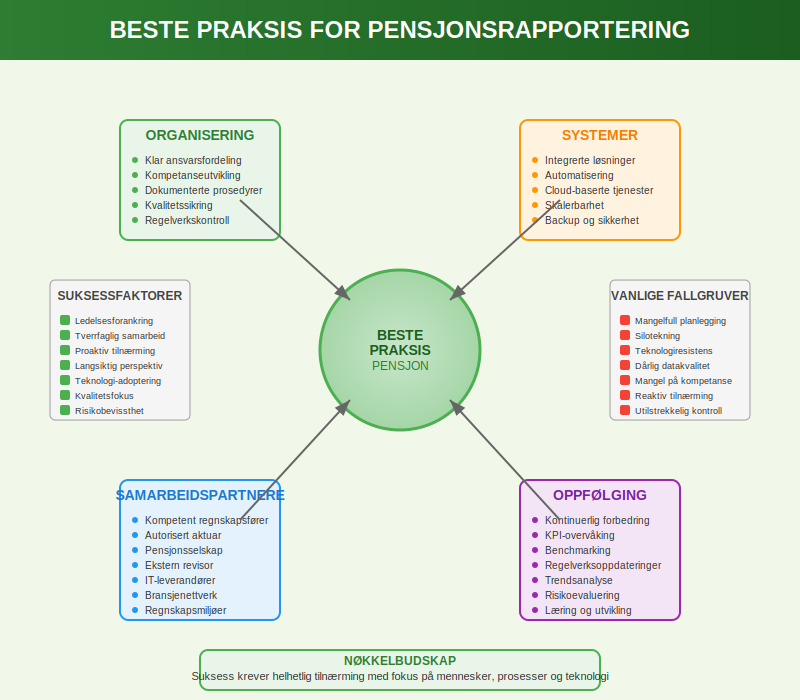
Konklusjon
Pensjonsrapportering er en kompleks og kritisk del av moderne regnskapsføring som krever grundig forståelse av både regnskapstekniske og aktuarmessige aspekter. Bedrifter må etablere robuste systemer og prosesser for å sikre korrekt og transparent rapportering av pensjonsforpliktelser.
Effektiv pensjonsrapportering støtter ikke bare lovpålagt compliance, men gir også verdifull innsikt for strategisk beslutningstakning og risikostyring. Med den pågående digitaliseringen og regulatoriske utviklingen, vil pensjonsrapportering fortsette å utvikle seg som et sentralt element i finansiell rapportering.
For bedrifter som ønsker å mestre pensjonsrapportering, er det essensielt å investere i kompetanse, systemer og prosesser som sikrer både dagens krav og fremtidens utfordringer.